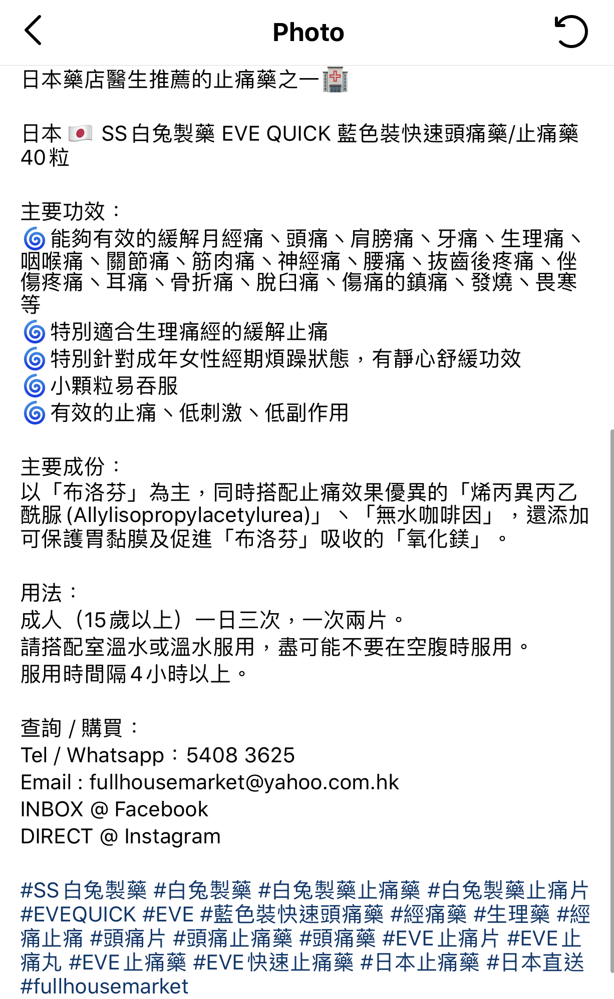
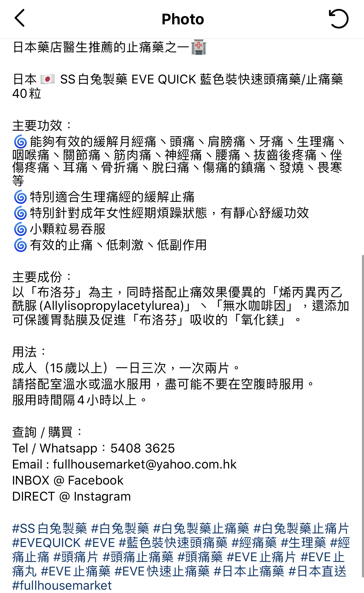

EVE-QUICK, a tablet for relieving headache and reducing fever, is a popular pharmaceutical product in Japan which a lot of people like to buy as souvenirs when they travel to Japan. The EVE series of medicines are produced by SSP CO., LTD, a Japanese pharmaceutical company run for more than 250 years. It can be easily sold in any pharmacies in Japan.
While the EVE series are widely used in Japan, its method of consumption in Hong Kong is not as easy as that in Japan. In March 2020, a woman was arrested for the illegal sale of unregistered pharmaceutical products and Part 1 poisons on social media platform in Hong Kong. The photo on the right shows the two illegal products she sold. One of the products she sold was EVE-QUICK, which contains Ibuprofen.
The series of EVE medicine including EVE-QUICK,
EVE-QUICK DX, EVE-A EX, EVE-A and EVE MELT.
EVE-QUICK contains ibuprofen, which is distinguished as Part 1 poisons under regulations in Hong Kong. Not only EVE-QUICK, but the whole EVE series also contains ibuprofen. From the product labelling shown on the company website, it states that the five products of EVE series, including EVE-QUICK, EVE-QUICK DX, EVE-A EX, EVE-A, EVE MELT, contains 150 to 200 mg ibuprofen.
The ingredients of EVE QUICK DX anf EVE DX which the former contains 200 mg of ibuprofen per tablet and the latter contains 150 mg of ibuprofen per tablet.
Ibuprofen restricted as Part 1 poisons under the ordinance
Ibuprofen is a common medication that is used for treating pain, fever and inflammation. According to the Department of Health, ibuprofen is a non-steroidal anti-inflammatory pain killer and it may cause side effects like nausea, gastrointestinal discomfort and peptic ulcers. While ibuprofen was listed under Part 1 poisons in the Pharmacy and Poisons Ordinance (Cap 138), products containing ibuprofen should only be supplied by a pharmacy under the supervision of a registered pharmacist or upon the advice of a medical practitioner.
According to the CAP.138A Pharmacy and Poisons Regulation,
ibuprofen is part 1 poison in Hong Kong.
Besides, pharmaceutical products must be registered with the Pharmacy and Poisons Board of Hong Kong before they can be legally sold in the market. This tablet, EVE Quick and other products belonging to the EVE series are not registered. Illegal sale or possession of Part 1 poisons and unregistered pharmaceutical products are criminal offences, which may lead to a fine of $100,000 and two years' imprisonment at most.
“Purchasing agents” sell drug via online shop
However, there are ways that people in Hong Kong can buy EVE products without any medical proof or under the supervision of a registered pharmacist. Online shops on social media claiming as “purchasing agents” are selling EVE series products without any necessary proof provided.
Purchase agents which means that the seller does not have the products that the buyer wants, but they can provide the service to help the buyer to buy it after they did a transaction. In fact, the sellers have already bought related goods. When customers place an order, they can sell them immediately to make a profit. The shop stores and delivers drugs that are not registered in Hong Kong, which is similar to imported retail. It may be prosecuted for possessing unregistered pharmaceutical products. For controlled or dangerous drugs, the carrier, the person in charge, the staff involved and even the buyer will also be prosecuted for violating relevant regulations.
One of the online shops, “Full House Market” sold products including healthcare products, cosmetics and snacks on Instagram and Facebook. EVE-QUICK is one of their products sold. In the promotion description, the shop stated that EVE series is one of the suggested painkillers by pharmacies in Japan. Mentioning the effects, ingredients and consuming methods of the tablet, the shop didn’t mention any information about the tablets should be taken under supervision of a registered pharmacist or upon the advice of a medical practitioner. The chats below showed that the tablet could be easily bought from this shop.
 
